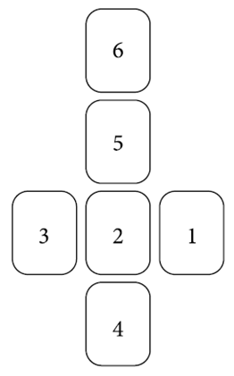

Это расширенный вариант предыдущего расклада. Это классика, которой я лично не пользуюсь, но не могу не показать вам. 
Руна № 1 – показывает существующее положение дел.
Руна № 2 – собственно человек, которому гадают. Это и характеристика его личности, и тенденции развития тех или иных его качеств.
Руна № 3 – указывает на ближайшее будущее.
Руна № 4 – это основа проблемы, ее корни.
Руна № 5 – непосредственные рекомендации, руководство к действию.
Руна № 6 – что произойдет, если человек выполнит рекомендации рун.
1 руна – Турисаз. Человек не может перейти из одного состояния в другое. Затянувшийся переход может быть возрастным кризисом (например, если выпала уточняющая руна Альгиз).
2 руна – Вуньо. В данный момент человек настроен негативно. Он постоянно возмущен или чем-то недоволен. Как следствие, его ментальный план засорен, что усугубляет ситуацию.
3 руна – Альгиз. Но в будущем человек найдет наставника, который выведет его на другой уровень.
4 руна – перевернутая Феху. Негативные проявления – это защитная реакция, они возникают из-за того, что человек сильно не уверен в себе.
5 руна – Тейваз. Человеку важно обрести веру в себя.
6 руна – Дагаз. Человек соберется, сделает рывок, и ситуация завершится переходом к новому этапу в жизни.